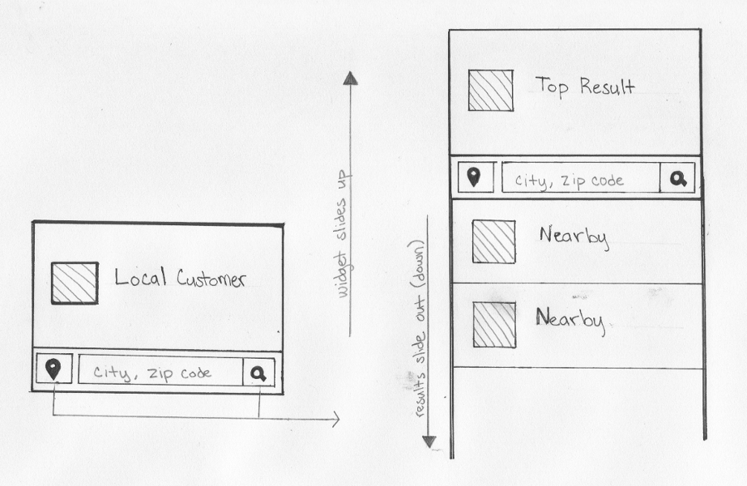
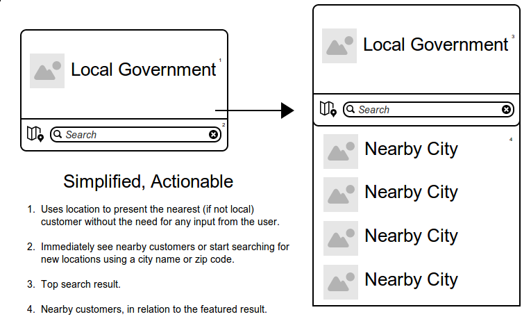

Designing Search
Curious about becoming an OpenGov customer, wants to see other governments using the service (proving credibility).
Showing her the closest customers brings the possibility of easily reaching out for a recommendation.
Looking to see if her local government is an OpenGov customer and/or to browse data.
Future Idea: If her local government is missing, encourage her to speak out and let them know she wants to see their data opened (using social media or some ‘petitioning’ system).
Final Sketch

Wireframe

Interactive Prototype